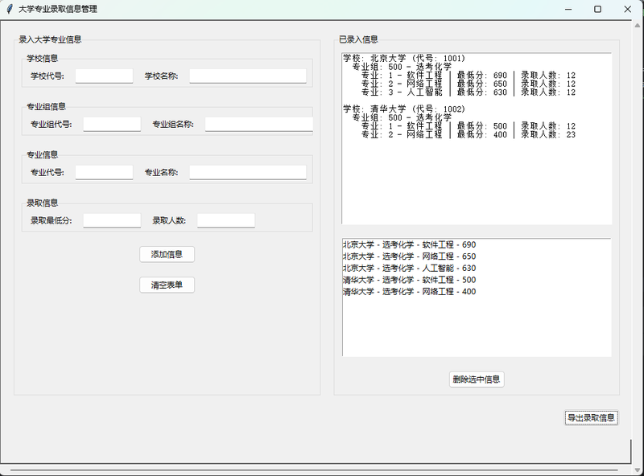
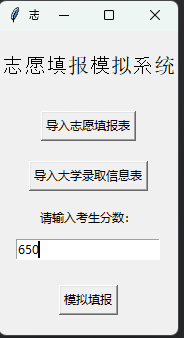
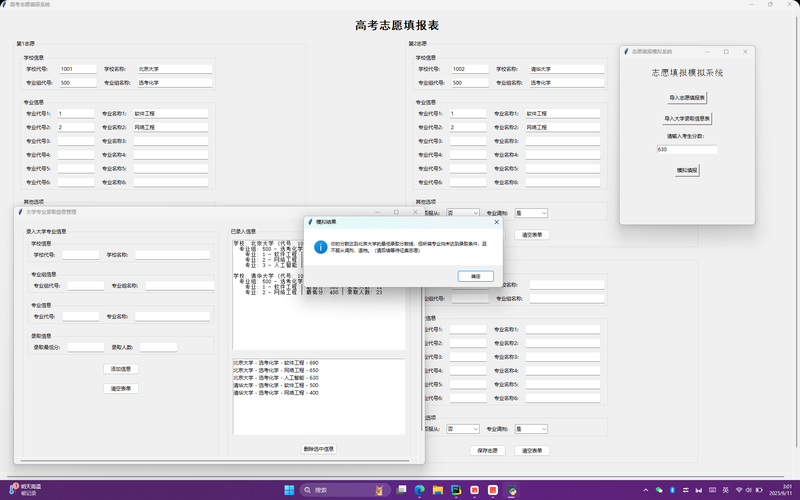
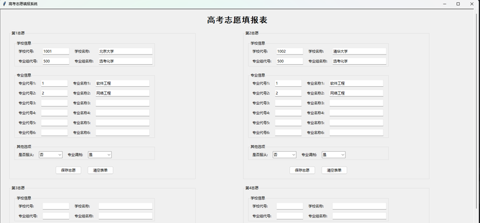

3+2+1 地区 40 个平行志愿高考报考模拟系统（基于福建高考）
一款为 3+2+1 新高考地区（尤其是福建省）设计的 40 个平行志愿填报模拟系统。包含三大模块：院校招生信息管理、志愿填报、志愿模拟录取。支持最新 2025 福建高考政策，能模拟投档录取全过程，帮助考生理解平行志愿规则、规避滑档退档风险。
| 模块 | 文件 | 功能 |
|---|---|---|
| 院校信息管理 | UniversityInfoTable.py | 录入管理各院校专业招生信息（代码、名称、分数线、招生人数） |
| 志愿填报 | SimulationApplicationAlgorithm.py | 创建编辑 40 个平行志愿，每志愿最多 6 个专业 |
| 志愿模拟 | SimulationVolunteerApplication.py | 导入数据，输入分数，模拟投档录取过程 |
点击图片可放大查看



每年的高考季都在做点东西，大二的时候写了这个志愿模拟系统。我对高考志愿填报这块一直挺了解的，做这个项目就是把我知道的那些规则——分数优先、遵循志愿、一轮投档，滑档和退档的区别——用代码实现出来。
tkinter 写 GUI 虽然丑了点，但胜在简单直接，打包成 EXE 后家里人也能用。项目后来更新到了 2025 年政策，star 数也是我 Python 项目里最高的。说到底，这个项目的价值不在于代码多优雅，而在于它真的能帮到人。